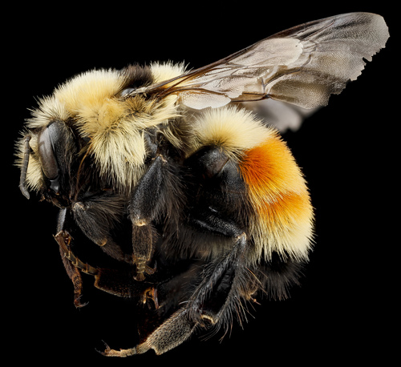
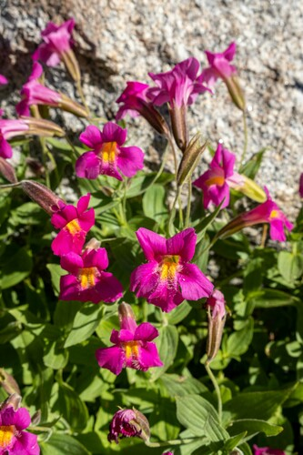

Hunt's Bumble Bee
Bombus huntii native bee

Common prairie/parkland bumble bee; long colony season makes it a key generalist pollinator of asters, clovers and mints.
108 documented plant relationships.
sips nectar at
 Ascending MilkvetchAstragalus laxmannii
Ascending MilkvetchAstragalus laxmannii Leslie Seaton, some rights reserved (CC BY)") BalsamrootBalsamorhiza sagittata
BalsamrootBalsamorhiza sagittata Douglas Goldman, some rights reserved (CC BY-SA), uploaded by Douglas Goldman") BearberryArctostaphylos uva-ursiBebb's WillowSalix bebbianaBee Balm (Wild Bergamot)Monarda fistulosa
BearberryArctostaphylos uva-ursiBebb's WillowSalix bebbianaBee Balm (Wild Bergamot)Monarda fistulosa Matt Lavin, some rights reserved (CC BY)") Big SagebrushArtemisia tridentata
Big SagebrushArtemisia tridentata Eugene Popov, some rights reserved (CC BY), uploaded by Eugene Popov") Birch-leaved SpireaSpiraea betulifoliaBlanketflowerGaillardia aristataBlue ClematisClematis occidentalis
Birch-leaved SpireaSpiraea betulifoliaBlanketflowerGaillardia aristataBlue ClematisClematis occidentalis W. Terry Hunefeld, some rights reserved (CC BY), uploaded by W. Terry Hunefeld") BroomweedGutierrezia sarothrae
BroomweedGutierrezia sarothrae Douglas Goldman, some rights reserved (CC BY-SA), uploaded by Douglas Goldman") Canada GoldenrodSolidago canadensis
Canada GoldenrodSolidago canadensis Jim Morefield, some rights reserved (CC BY), uploaded by Jim Morefield") Canada Milk VetchAstragalus canadensis
Canada Milk VetchAstragalus canadensis Douglas Goldman, some rights reserved (CC BY-SA), uploaded by Douglas Goldman") ChokecherryPrunus virginiana
ChokecherryPrunus virginiana tomasz przechlewski, some rights reserved (CC BY)") Common SnowberrySymphoricarpos albus
Common SnowberrySymphoricarpos albus KENPEI, some rights reserved (CC BY)") Common SunflowerHelianthus annuus
Common SunflowerHelianthus annuus Creeping JuniperJuniperus horizontalis
Creeping JuniperJuniperus horizontalis Matt Lavin, some rights reserved (CC BY-SA)") Dotted BlazingstarLiatris punctata
Dotted BlazingstarLiatris punctata Matt Lavin, some rights reserved (CC BY-SA)") Drummond's MilkvetchAstragalus drummondiiEarly Yellow OxytropisOxytropis sericeaElegant GoldenrodSolidago lepida
Drummond's MilkvetchAstragalus drummondiiEarly Yellow OxytropisOxytropis sericeaElegant GoldenrodSolidago lepida Douglas Goldman, some rights reserved (CC BY-SA), uploaded by Douglas Goldman") FireweedChamaenerion angustifolium
FireweedChamaenerion angustifolium Douglas Goldman, some rights reserved (CC BY-SA), uploaded by Douglas Goldman") Flat-topped GoldenrodEuthamia graminifolia
Flat-topped GoldenrodEuthamia graminifolia Catherine C. Galley, some rights reserved (CC BY), uploaded by Catherine C. Galley") Fragrant SumacRhus aromatica
Fragrant SumacRhus aromatica Alan Prather, some rights reserved (CC BY), uploaded by Alan Prather") Giant HyssopAgastache foeniculum
Giant HyssopAgastache foeniculum Matt Lavin, some rights reserved (CC BY-SA)") Golden BeanThermopsis rhombifolia
Golden BeanThermopsis rhombifolia peganum, some rights reserved (CC BY-SA)") Golden Currant (Buffalo Currant)Ribes aureumGumweedGrindelia squarrosa
Golden Currant (Buffalo Currant)Ribes aureumGumweedGrindelia squarrosa Matt Lavin, some rights reserved (CC BY-SA)") Hairy Golden AsterHeterotheca villosa
Hairy Golden AsterHeterotheca villosa Matt Lavin, some rights reserved (CC BY)") Hoary AsterDieteria canescens
Hoary AsterDieteria canescens Joe-Pye WeedEutrochium maculatum
Joe-Pye WeedEutrochium maculatum Andreas Stiller, some rights reserved (CC BY), uploaded by Andreas Stiller") Late GoldenrodSolidago gigantea
Late GoldenrodSolidago gigantea H. Zell, some rights reserved (CC BY-SA)") Leafy ArnicaArnica chamissonis
Leafy ArnicaArnica chamissonis psweet, some rights reserved (CC BY-SA), uploaded by psweet") Low-bush CranberryViburnum eduleMany-flowered Aster (Tufted White Prairie Aster)Symphyotrichum ericoidesMaximilian SunflowerHelianthus maximiliani
Low-bush CranberryViburnum eduleMany-flowered Aster (Tufted White Prairie Aster)Symphyotrichum ericoidesMaximilian SunflowerHelianthus maximiliani aarongunnar, some rights reserved (CC BY), uploaded by aarongunnar") Meadow BlazingstarLiatris ligulistylisMoss PhloxPhlox hoodii
Meadow BlazingstarLiatris ligulistylisMoss PhloxPhlox hoodii Matt Lavin, some rights reserved (CC BY)") Mountain GentianGentiana calycosaMountain HollyhockIliamna rivularisNanking CherryPrunus tomentosa
Mountain GentianGentiana calycosaMountain HollyhockIliamna rivularisNanking CherryPrunus tomentosa Jason Sturner, some rights reserved (CC BY)") Nodding OnionAllium cernuum
Nodding OnionAllium cernuum Douglas Goldman, some rights reserved (CC BY-SA), uploaded by Douglas Goldman") Northern BedstrawGalium boreale
Northern BedstrawGalium boreale Carrie Seltzer, some rights reserved (CC BY), uploaded by Carrie Seltzer") Northern HedysarumHedysarum boreale
Northern HedysarumHedysarum boreale Bob Nieman, some rights reserved (CC BY), uploaded by Bob Nieman") Nuttall's SunflowerHelianthus nuttallii
Nuttall's SunflowerHelianthus nuttallii Caleb Catto, some rights reserved (CC BY), uploaded by Caleb Catto") Pale AgoserisAgoseris glauca
Pale AgoserisAgoseris glauca
Pink Monkey FlowerErythranthe lewisii Syd Cannings, some rights reserved (CC BY), uploaded by Syd Cannings") Prairie CrocusPulsatilla nuttallianaPrairie GoldenrodSolidago missouriensis
Prairie CrocusPulsatilla nuttallianaPrairie GoldenrodSolidago missouriensis Joshua Mayer, some rights reserved (CC BY-SA)") Prairie RoseRosa arkansanaPrairie ThistleCirsium flodmanii
Prairie RoseRosa arkansanaPrairie ThistleCirsium flodmanii Tom Norton, some rights reserved (CC BY), uploaded by Tom Norton") Prickly Wild RoseRosa acicularisPurple Prairie CloverDalea purpurea
Prickly Wild RoseRosa acicularisPurple Prairie CloverDalea purpurea Matt Lavin, some rights reserved (CC BY-SA)") RabbitbrushEricameria nauseosaRocky Mountain BeeplantPeritoma serrulata
RabbitbrushEricameria nauseosaRocky Mountain BeeplantPeritoma serrulata Stan Shebs, some rights reserved (CC BY-SA)") Scarlet Butterfly PlantOenothera suffrutescensScarlet GlobemallowSphaeralcea coccinea
Scarlet Butterfly PlantOenothera suffrutescensScarlet GlobemallowSphaeralcea coccinea Fluff Berger, some rights reserved (CC BY-SA), uploaded by Fluff Berger") Showy FleabaneErigeron speciosus
Showy FleabaneErigeron speciosus Douglas Goldman, some rights reserved (CC BY-SA), uploaded by Douglas Goldman") Showy MilkweedAsclepias speciosaShrubby CinquefoilDasiphora fruticosa
Showy MilkweedAsclepias speciosaShrubby CinquefoilDasiphora fruticosa David Anderson, some rights reserved (CC BY), uploaded by David Anderson") Silky LupineLupinus sericeus
Silky LupineLupinus sericeus Ryan Hodnett, some rights reserved (CC BY-SA)") SilverberryElaeagnus commutata
SilverberryElaeagnus commutata Tim Messick, some rights reserved (CC BY), uploaded by Tim Messick") Silvery LupineLupinus argenteus
Silvery LupineLupinus argenteus Jason Alexander, some rights reserved (CC BY), uploaded by Jason Alexander") Slender Blue BeardtonguePenstemon procerus
Slender Blue BeardtonguePenstemon procerus Slender Cinquefoil (Graceful Cinquefoil)Potentilla gracilis
Slender Cinquefoil (Graceful Cinquefoil)Potentilla gracilis aarongunnar, some rights reserved (CC BY), uploaded by aarongunnar") Smooth AsterSymphyotrichum laeve
Smooth AsterSymphyotrichum laeve Matt Lavin, some rights reserved (CC BY-SA)") Smooth Blue BeardtonguePenstemon nitidus
Smooth Blue BeardtonguePenstemon nitidus gwt2102, some rights reserved (CC BY)") Spreading DogbaneApocynum androsaemifolium
Spreading DogbaneApocynum androsaemifolium Sticky Purple GeraniumGeranium viscosissimumStiff GoldenrodOligoneuron rigidum
Sticky Purple GeraniumGeranium viscosissimumStiff GoldenrodOligoneuron rigidum Matt Lavin, some rights reserved (CC BY-SA)") Three Flowered Avens (Prairie Smoke, Old Man's Whiskers)Geum triflorumUmbrella BuckwheatEriogonum umbellatum
Three Flowered Avens (Prairie Smoke, Old Man's Whiskers)Geum triflorumUmbrella BuckwheatEriogonum umbellatum Nick Block, some rights reserved (CC BY), uploaded by Nick Block") Western Blue IrisIris missouriensis
Western Blue IrisIris missouriensis Katja Schulz, some rights reserved (CC BY)") Western Canada VioletViola canadensis
Western Canada VioletViola canadensis Mary Krieger, some rights reserved (CC BY), uploaded by Mary Krieger") Western SnowberrySymphoricarpos occidentalis
Western SnowberrySymphoricarpos occidentalis Esben Kjaer, some rights reserved (CC BY), uploaded by Esben Kjaer") White Prairie CloverDalea candida
White Prairie CloverDalea candida tzeducation, some rights reserved (CC BY), uploaded by tzeducation") Wild BergamotMonarda fistulosa
Wild BergamotMonarda fistulosa Tom Hilton, some rights reserved (CC BY), uploaded by Tom Hilton") Wild Blue FlaxLinum lewisii
Wild Blue FlaxLinum lewisii Pohled 111, some rights reserved (CC BY-SA)") Wild ChivesAllium schoenoprasum
Wild ChivesAllium schoenoprasum Peter L Achuff, some rights reserved (CC BY), uploaded by Peter L Achuff") Wild ClematisClematis ligusticifolia
Wild ClematisClematis ligusticifolia Matt Lavin, some rights reserved (CC BY-SA)") Wild LicoriceGlycyrrhiza lepidotaWild MintMentha arvensis
Wild LicoriceGlycyrrhiza lepidotaWild MintMentha arvensis Ole Husby, some rights reserved (CC BY-SA)") Wild RaspberryRubus idaeus
Wild RaspberryRubus idaeus Andrea Romero, some rights reserved (CC BY), uploaded by Andrea Romero") Wild VetchVicia americana
Wild VetchVicia americana Michael J. Papay, some rights reserved (CC BY), uploaded by Michael J. Papay") Willow AsterSymphyotrichum lanceolatum
Willow AsterSymphyotrichum lanceolatum Don Loarie, some rights reserved (CC BY), uploaded by Don Loarie") Woods' RoseRosa woodsii
Woods' RoseRosa woodsii Douglas Goldman, some rights reserved (CC BY-SA), uploaded by Douglas Goldman") YarrowAchillea millefolium
YarrowAchillea millefolium J Brew, some rights reserved (CC BY-SA), uploaded by J Brew") Yellow BeardtonguePenstemon confertus
Yellow BeardtonguePenstemon confertus Matt Lavin, some rights reserved (CC BY-SA)") Yellow PucoonLithospermum ruderale
Yellow PucoonLithospermum ruderalegathers pollen at
Bee Balm (Wild Bergamot)Monarda fistulosaBlanketflowerGaillardia aristataBlue ColumbineAquilegia brevistyla J Brew, some rights reserved (CC BY-SA), uploaded by J Brew") Common PaintbrushCastilleja miniataCommon SnowberrySymphoricarpos albusCommon SunflowerHelianthus annuusDrummond's MilkvetchAstragalus drummondiiFireweedChamaenerion angustifoliumLate GoldenrodSolidago gigantea
Common PaintbrushCastilleja miniataCommon SnowberrySymphoricarpos albusCommon SunflowerHelianthus annuusDrummond's MilkvetchAstragalus drummondiiFireweedChamaenerion angustifoliumLate GoldenrodSolidago gigantea Justin Meissen, some rights reserved (CC BY-SA)") Lilac PenstemonPenstemon gracilisPrairie GoldenrodSolidago missouriensisPrickly Wild RoseRosa acicularisPurple Prairie CloverDalea purpureaShowy FleabaneErigeron speciosusSilky LupineLupinus sericeusSticky Purple GeraniumGeranium viscosissimum
Lilac PenstemonPenstemon gracilisPrairie GoldenrodSolidago missouriensisPrickly Wild RoseRosa acicularisPurple Prairie CloverDalea purpureaShowy FleabaneErigeron speciosusSilky LupineLupinus sericeusSticky Purple GeraniumGeranium viscosissimum White GeraniumGeranium richardsoniiWhite Prairie CloverDalea candidaWild BergamotMonarda fistulosaWild RaspberryRubus idaeus
White GeraniumGeranium richardsoniiWhite Prairie CloverDalea candidaWild BergamotMonarda fistulosaWild RaspberryRubus idaeus
Common PaintbrushCastilleja miniataCommon SnowberrySymphoricarpos albusCommon SunflowerHelianthus annuusDrummond's MilkvetchAstragalus drummondiiFireweedChamaenerion angustifoliumLate GoldenrodSolidago giganteaLilac PenstemonPenstemon gracilisPrairie GoldenrodSolidago missouriensisPrickly Wild RoseRosa acicularisPurple Prairie CloverDalea purpureaShowy FleabaneErigeron speciosusSilky LupineLupinus sericeusSticky Purple GeraniumGeranium viscosissimumWhite GeraniumGeranium richardsoniiWhite Prairie CloverDalea candidaWild BergamotMonarda fistulosaWild RaspberryRubus idaeus